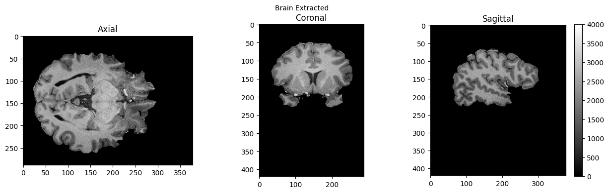
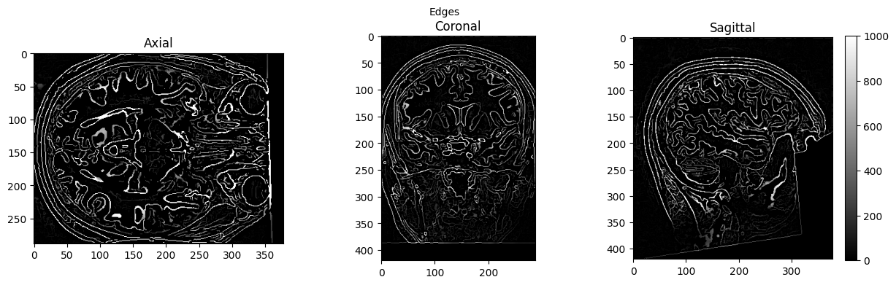

Basic Nipype#
Author: Steffen Bollmann
Output CPU information for reproducibility#
%%bash
cat /proc/cpuinfo | grep 'vendor' | uniq
cat /proc/cpuinfo | grep 'model name' | uniq
vendor_id : AuthenticAMD
model name : AMD EPYC 7763 64-Core Processor
Demonstrating the module system in Python and Nipype#
# we can use module to load fsl in a specific version
import module
await module.load('fsl/6.0.4')
await module.list()
Lmod Warning: MODULEPATH is undefined.
Lmod has detected the following error: The following module(s) are unknown:
"fsl/6.0.4"
Please check the spelling or version number. Also try "module spider ..."
It is also possible your cache file is out-of-date; it may help to try:
$ module --ignore_cache load "fsl/6.0.4"
Also make sure that all modulefiles written in TCL start with the string
#%Module
[]
from nipype.interfaces.fsl.base import Info
print(Info.version())
# if the FSL version is changed using module above, the kernel of the notebook needs to be restarted!
None
!bet
/bin/bash: line 1: bet: command not found
Load AFNI and SPM as well#
await module.load('afni/22.3.06')
await module.load('spm12/r7771')
await module.list()
Lmod Warning: MODULEPATH is undefined.
Lmod has detected the following error: The following module(s) are unknown:
"afni/22.3.06"
Please check the spelling or version number. Also try "module spider ..."
It is also possible your cache file is out-of-date; it may help to try:
$ module --ignore_cache load "afni/22.3.06"
Also make sure that all modulefiles written in TCL start with the string
#%Module
Lmod Warning: MODULEPATH is undefined.
Lmod has detected the following error: The following module(s) are unknown:
"spm12/r7771"
Please check the spelling or version number. Also try "module spider ..."
It is also possible your cache file is out-of-date; it may help to try:
$ module --ignore_cache load "spm12/r7771"
Also make sure that all modulefiles written in TCL start with the string
#%Module
[]
download test data#
%%bash
if [ -f ./sub-01_ses-01_7T_T1w_defaced.nii ]; then
echo "nii Output file exists, not downloading or unpacking again"
else
if [ ! -f ./sub-01_ses-01_7T_T1w_defaced.nii.gz ]; then
echo "nii.gz does not exist. So, it needs to be downloaded."
osfURL="osfstorage/TOMCAT_DIB/sub-01/ses-01_7T/anat/sub-01_ses-01_7T_T1w_defaced.nii.gz"
echo "downloading now ..."
osf -p bt4ez fetch $osfURL ./sub-01_ses-01_7T_T1w_defaced.nii.gz
fi
if [ -f ./sub-01_ses-01_7T_T1w_defaced.nii.gz ]; then
echo "nii.gz exists. So, it needs to be unpacked and deleted"
echo "unpacking now ..."
gunzip ./sub-01_ses-01_7T_T1w_defaced.nii.gz
fi
fi
nii.gz does not exist. So, it needs to be downloaded.
downloading now ...
nii.gz exists. So, it needs to be unpacked and deleted
unpacking now ...
0%| | 0.00/72.7M [00:00<?, ?bytes/s]
0%| | 16.4k/72.7M [00:00<09:47, 124kbytes/s]
0%| | 49.2k/72.7M [00:00<07:43, 157kbytes/s]
0%| | 81.9k/72.7M [00:00<07:19, 165kbytes/s]
0%| | 147k/72.7M [00:00<04:24, 274kbytes/s]
0%| | 213k/72.7M [00:00<03:21, 360kbytes/s]
0%| | 279k/72.7M [00:00<02:46, 435kbytes/s]
0%| | 344k/72.7M [00:00<02:28, 486kbytes/s]
1%| | 410k/72.7M [00:01<02:28, 485kbytes/s]
1%| | 492k/72.7M [00:01<02:06, 570kbytes/s]
1%| | 557k/72.7M [00:01<02:06, 572kbytes/s]
1%| | 639k/72.7M [00:01<02:04, 581kbytes/s]
1%| | 721k/72.7M [00:01<01:54, 630kbytes/s]
1%| | 786k/72.7M [00:01<01:54, 630kbytes/s]
1%| | 852k/72.7M [00:01<02:04, 579kbytes/s]
1%|▏ | 950k/72.7M [00:01<01:47, 669kbytes/s]
1%|▏ | 1.03M/72.7M [00:02<01:58, 604kbytes/s]
2%|▏ | 1.10M/72.7M [00:02<02:35, 460kbytes/s]
2%|▏ | 1.18M/72.7M [00:02<02:31, 471kbytes/s]
2%|▏ | 1.28M/72.7M [00:02<02:21, 506kbytes/s]
2%|▏ | 1.39M/72.7M [00:02<02:08, 555kbytes/s]
2%|▏ | 1.49M/72.7M [00:02<02:07, 558kbytes/s]
2%|▏ | 1.61M/72.7M [00:03<02:00, 588kbytes/s]
2%|▏ | 1.72M/72.7M [00:03<01:57, 604kbytes/s]
3%|▎ | 1.84M/72.7M [00:03<01:54, 621kbytes/s]
3%|▎ | 1.93M/72.7M [00:03<01:57, 604kbytes/s]
3%|▎ | 2.05M/72.7M [00:03<01:54, 618kbytes/s]
3%|▎ | 2.16M/72.7M [00:04<01:51, 631kbytes/s]
3%|▎ | 2.28M/72.7M [00:04<01:57, 598kbytes/s]
3%|▎ | 2.39M/72.7M [00:04<01:56, 603kbytes/s]
3%|▎ | 2.47M/72.7M [00:04<02:00, 581kbytes/s]
4%|▎ | 2.59M/72.7M [00:04<01:55, 605kbytes/s]
4%|▎ | 2.69M/72.7M [00:04<01:58, 590kbytes/s]
4%|▍ | 2.82M/72.7M [00:05<01:49, 640kbytes/s]
4%|▍ | 2.92M/72.7M [00:05<01:51, 627kbytes/s]
4%|▍ | 3.03M/72.7M [00:05<01:49, 637kbytes/s]
4%|▍ | 3.13M/72.7M [00:05<01:53, 612kbytes/s]
4%|▍ | 3.26M/72.7M [00:05<01:47, 648kbytes/s]
5%|▍ | 3.36M/72.7M [00:05<01:49, 634kbytes/s]
5%|▍ | 3.47M/72.7M [00:06<01:47, 643kbytes/s]
5%|▍ | 3.57M/72.7M [00:06<01:50, 623kbytes/s]
5%|▌ | 3.70M/72.7M [00:06<01:43, 664kbytes/s]
5%|▌ | 3.80M/72.7M [00:06<01:46, 645kbytes/s]
5%|▌ | 3.92M/72.7M [00:06<01:45, 649kbytes/s]
6%|▌ | 4.01M/72.7M [00:07<01:49, 627kbytes/s]
6%|▌ | 4.15M/72.7M [00:07<01:42, 666kbytes/s]
6%|▌ | 4.24M/72.7M [00:07<01:45, 646kbytes/s]
6%|▌ | 4.36M/72.7M [00:07<01:44, 651kbytes/s]
6%|▌ | 4.46M/72.7M [00:07<01:48, 629kbytes/s]
6%|▋ | 4.59M/72.7M [00:07<01:42, 664kbytes/s]
6%|▋ | 4.69M/72.7M [00:08<01:45, 645kbytes/s]
7%|▋ | 4.80M/72.7M [00:08<01:53, 596kbytes/s]
7%|▋ | 4.87M/72.7M [00:08<02:03, 547kbytes/s]
7%|▋ | 4.95M/72.7M [00:08<02:04, 546kbytes/s]
7%|▋ | 5.05M/72.7M [00:08<02:02, 553kbytes/s]
7%|▋ | 5.18M/72.7M [00:08<01:49, 614kbytes/s]
7%|▋ | 5.28M/72.7M [00:09<01:50, 608kbytes/s]
7%|▋ | 5.39M/72.7M [00:09<01:47, 625kbytes/s]
8%|▊ | 5.49M/72.7M [00:09<01:50, 608kbytes/s]
8%|▊ | 5.62M/72.7M [00:09<01:44, 642kbytes/s]
8%|▊ | 5.72M/72.7M [00:09<01:48, 618kbytes/s]
8%|▊ | 5.83M/72.7M [00:09<01:45, 636kbytes/s]
8%|▊ | 5.93M/72.7M [00:10<01:47, 619kbytes/s]
8%|▊ | 6.06M/72.7M [00:10<01:41, 658kbytes/s]
8%|▊ | 6.16M/72.7M [00:10<01:45, 632kbytes/s]
9%|▊ | 6.28M/72.7M [00:10<01:43, 641kbytes/s]
9%|▉ | 6.37M/72.7M [00:10<01:45, 627kbytes/s]
9%|▉ | 6.50M/72.7M [00:10<01:39, 666kbytes/s]
9%|▉ | 6.60M/72.7M [00:11<01:41, 648kbytes/s]
9%|▉ | 6.72M/72.7M [00:11<01:41, 652kbytes/s]
9%|▉ | 6.82M/72.7M [00:11<01:43, 636kbytes/s]
10%|▉ | 6.95M/72.7M [00:11<01:37, 673kbytes/s]
10%|▉ | 7.05M/72.7M [00:11<01:40, 652kbytes/s]
10%|▉ | 7.16M/72.7M [00:11<01:40, 654kbytes/s]
10%|▉ | 7.26M/72.7M [00:12<01:42, 637kbytes/s]
10%|█ | 7.39M/72.7M [00:12<01:37, 673kbytes/s]
10%|█ | 7.49M/72.7M [00:12<01:39, 652kbytes/s]
10%|█ | 7.60M/72.7M [00:12<01:39, 653kbytes/s]
11%|█ | 7.70M/72.7M [00:12<01:42, 637kbytes/s]
11%|█ | 7.83M/72.7M [00:13<01:36, 673kbytes/s]
11%|█ | 7.93M/72.7M [00:13<01:39, 653kbytes/s]
11%|█ | 8.04M/72.7M [00:13<01:38, 656kbytes/s]
11%|█ | 8.14M/72.7M [00:13<01:41, 639kbytes/s]
11%|█▏ | 8.27M/72.7M [00:13<01:35, 675kbytes/s]
12%|█▏ | 8.37M/72.7M [00:13<01:38, 654kbytes/s]
12%|█▏ | 8.49M/72.7M [00:14<01:42, 628kbytes/s]
12%|█▏ | 8.55M/72.7M [00:14<01:53, 566kbytes/s]
12%|█▏ | 8.67M/72.7M [00:14<01:47, 596kbytes/s]
12%|█▏ | 8.78M/72.7M [00:14<01:42, 625kbytes/s]
12%|█▏ | 8.88M/72.7M [00:14<01:43, 617kbytes/s]
12%|█▏ | 8.99M/72.7M [00:14<01:41, 626kbytes/s]
13%|█▎ | 9.11M/72.7M [00:15<01:39, 637kbytes/s]
13%|█▎ | 9.22M/72.7M [00:15<01:37, 653kbytes/s]
13%|█▎ | 9.32M/72.7M [00:15<01:39, 637kbytes/s]
13%|█▎ | 9.44M/72.7M [00:15<01:37, 646kbytes/s]
13%|█▎ | 9.55M/72.7M [00:15<01:37, 651kbytes/s]
13%|█▎ | 9.67M/72.7M [00:15<01:34, 664kbytes/s]
13%|█▎ | 9.76M/72.7M [00:16<01:38, 641kbytes/s]
14%|█▎ | 9.88M/72.7M [00:16<01:37, 645kbytes/s]
14%|█▍ | 9.99M/72.7M [00:16<01:35, 654kbytes/s]
14%|█▍ | 10.1M/72.7M [00:16<01:34, 665kbytes/s]
14%|█▍ | 10.2M/72.7M [00:16<01:36, 645kbytes/s]
14%|█▍ | 10.3M/72.7M [00:16<01:35, 651kbytes/s]
14%|█▍ | 10.4M/72.7M [00:17<01:35, 654kbytes/s]
15%|█▍ | 10.6M/72.7M [00:17<01:33, 666kbytes/s]
15%|█▍ | 10.6M/72.7M [00:17<01:36, 644kbytes/s]
15%|█▍ | 10.8M/72.7M [00:17<01:34, 652kbytes/s]
15%|█▍ | 10.9M/72.7M [00:17<01:33, 663kbytes/s]
15%|█▌ | 11.0M/72.7M [00:17<01:32, 670kbytes/s]
15%|█▌ | 11.1M/72.7M [00:18<01:35, 644kbytes/s]
15%|█▌ | 11.2M/72.7M [00:18<01:33, 654kbytes/s]
16%|█▌ | 11.3M/72.7M [00:18<01:32, 666kbytes/s]
16%|█▌ | 11.4M/72.7M [00:18<01:30, 675kbytes/s]
16%|█▌ | 11.5M/72.7M [00:18<01:33, 652kbytes/s]
16%|█▌ | 11.6M/72.7M [00:18<01:32, 656kbytes/s]
16%|█▌ | 11.8M/72.7M [00:19<01:31, 668kbytes/s]
16%|█▋ | 11.9M/72.7M [00:19<01:29, 676kbytes/s]
16%|█▋ | 12.0M/72.7M [00:19<01:33, 653kbytes/s]
17%|█▋ | 12.1M/72.7M [00:19<01:32, 657kbytes/s]
17%|█▋ | 12.2M/72.7M [00:19<01:30, 668kbytes/s]
17%|█▋ | 12.3M/72.7M [00:19<01:29, 676kbytes/s]
17%|█▋ | 12.4M/72.7M [00:20<01:32, 651kbytes/s]
17%|█▋ | 12.5M/72.7M [00:20<01:31, 655kbytes/s]
17%|█▋ | 12.6M/72.7M [00:20<01:30, 665kbytes/s]
18%|█▊ | 12.7M/72.7M [00:20<01:32, 645kbytes/s]
18%|█▊ | 12.9M/72.7M [00:20<01:34, 634kbytes/s]
18%|█▊ | 12.9M/72.7M [00:20<01:44, 572kbytes/s]
18%|█▊ | 13.0M/72.7M [00:21<01:47, 556kbytes/s]
18%|█▊ | 13.1M/72.7M [00:21<01:40, 591kbytes/s]
18%|█▊ | 13.2M/72.7M [00:21<01:35, 621kbytes/s]
18%|█▊ | 13.3M/72.7M [00:21<01:36, 614kbytes/s]
19%|█▊ | 13.5M/72.7M [00:21<01:34, 629kbytes/s]
19%|█▊ | 13.6M/72.7M [00:21<01:31, 648kbytes/s]
19%|█▉ | 13.7M/72.7M [00:22<01:29, 662kbytes/s]
19%|█▉ | 13.8M/72.7M [00:22<01:31, 642kbytes/s]
19%|█▉ | 13.9M/72.7M [00:22<01:30, 650kbytes/s]
19%|█▉ | 14.0M/72.7M [00:22<01:28, 663kbytes/s]
19%|█▉ | 14.1M/72.7M [00:22<01:27, 672kbytes/s]
20%|█▉ | 14.2M/72.7M [00:22<01:29, 651kbytes/s]
20%|█▉ | 14.3M/72.7M [00:23<01:29, 653kbytes/s]
20%|█▉ | 14.5M/72.7M [00:23<01:27, 666kbytes/s]
20%|██ | 14.6M/72.7M [00:23<01:26, 674kbytes/s]
20%|██ | 14.7M/72.7M [00:23<01:29, 652kbytes/s]
20%|██ | 14.8M/72.7M [00:23<01:27, 665kbytes/s]
20%|██ | 14.9M/72.7M [00:23<01:25, 674kbytes/s]
21%|██ | 15.0M/72.7M [00:24<01:28, 651kbytes/s]
21%|██ | 15.1M/72.7M [00:24<01:28, 652kbytes/s]
21%|██ | 15.2M/72.7M [00:24<01:26, 663kbytes/s]
21%|██ | 15.3M/72.7M [00:24<01:25, 671kbytes/s]
21%|██ | 15.4M/72.7M [00:24<01:28, 649kbytes/s]
21%|██▏ | 15.5M/72.7M [00:24<01:27, 653kbytes/s]
22%|██▏ | 15.7M/72.7M [00:25<01:25, 665kbytes/s]
22%|██▏ | 15.8M/72.7M [00:25<01:24, 674kbytes/s]
22%|██▏ | 15.9M/72.7M [00:25<01:27, 651kbytes/s]
22%|██▏ | 16.0M/72.7M [00:25<01:27, 646kbytes/s]
22%|██▏ | 16.1M/72.7M [00:25<01:25, 660kbytes/s]
22%|██▏ | 16.2M/72.7M [00:25<01:24, 670kbytes/s]
22%|██▏ | 16.3M/72.7M [00:26<01:27, 644kbytes/s]
23%|██▎ | 16.4M/72.7M [00:26<01:27, 641kbytes/s]
23%|██▎ | 16.5M/72.7M [00:26<01:25, 657kbytes/s]
23%|██▎ | 16.7M/72.7M [00:26<01:23, 667kbytes/s]
23%|██▎ | 16.8M/72.7M [00:26<01:26, 647kbytes/s]
23%|██▎ | 16.9M/72.7M [00:26<01:24, 661kbytes/s]
23%|██▎ | 17.0M/72.7M [00:27<01:23, 671kbytes/s]
24%|██▎ | 17.1M/72.7M [00:27<01:25, 649kbytes/s]
24%|██▎ | 17.2M/72.7M [00:27<01:25, 652kbytes/s]
24%|██▍ | 17.3M/72.7M [00:27<01:23, 664kbytes/s]
24%|██▍ | 17.4M/72.7M [00:27<01:22, 673kbytes/s]
24%|██▍ | 17.5M/72.7M [00:27<01:24, 651kbytes/s]
24%|██▍ | 17.6M/72.7M [00:28<01:23, 656kbytes/s]
24%|██▍ | 17.8M/72.7M [00:28<01:22, 667kbytes/s]
25%|██▍ | 17.9M/72.7M [00:28<01:21, 674kbytes/s]
25%|██▍ | 18.0M/72.7M [00:28<01:23, 651kbytes/s]
25%|██▍ | 18.1M/72.7M [00:28<01:23, 656kbytes/s]
25%|██▌ | 18.2M/72.7M [00:28<01:21, 668kbytes/s]
25%|██▌ | 18.3M/72.7M [00:29<01:20, 676kbytes/s]
25%|██▌ | 18.4M/72.7M [00:29<01:23, 653kbytes/s]
25%|██▌ | 18.5M/72.7M [00:29<01:22, 658kbytes/s]
26%|██▌ | 18.6M/72.7M [00:29<01:20, 669kbytes/s]
26%|██▌ | 18.8M/72.7M [00:29<01:19, 677kbytes/s]
26%|██▌ | 18.9M/72.7M [00:29<01:22, 653kbytes/s]
26%|██▌ | 19.0M/72.7M [00:30<01:20, 664kbytes/s]
26%|██▋ | 19.1M/72.7M [00:30<01:19, 673kbytes/s]
26%|██▋ | 19.2M/72.7M [00:30<01:22, 651kbytes/s]
27%|██▋ | 19.3M/72.7M [00:30<01:21, 655kbytes/s]
27%|██▋ | 19.4M/72.7M [00:30<01:20, 664kbytes/s]
27%|██▋ | 19.5M/72.7M [00:30<01:18, 673kbytes/s]
27%|██▋ | 19.6M/72.7M [00:31<01:27, 605kbytes/s]
27%|██▋ | 19.7M/72.7M [00:31<01:36, 550kbytes/s]
27%|██▋ | 19.8M/72.7M [00:31<01:43, 510kbytes/s]
27%|██▋ | 19.9M/72.7M [00:31<01:37, 542kbytes/s]
27%|██▋ | 20.0M/72.7M [00:31<01:29, 587kbytes/s]
28%|██▊ | 20.1M/72.7M [00:31<01:29, 591kbytes/s]
28%|██▊ | 20.2M/72.7M [00:32<01:25, 614kbytes/s]
28%|██▊ | 20.3M/72.7M [00:32<01:22, 638kbytes/s]
28%|██▊ | 20.4M/72.7M [00:32<01:19, 655kbytes/s]
28%|██▊ | 20.5M/72.7M [00:32<01:21, 638kbytes/s]
28%|██▊ | 20.6M/72.7M [00:32<01:20, 645kbytes/s]
29%|██▊ | 20.7M/72.7M [00:32<01:18, 659kbytes/s]
29%|██▊ | 20.9M/72.7M [00:33<01:17, 670kbytes/s]
29%|██▉ | 21.0M/72.7M [00:33<01:19, 649kbytes/s]
29%|██▉ | 21.1M/72.7M [00:33<01:17, 663kbytes/s]
29%|██▉ | 21.2M/72.7M [00:33<01:16, 672kbytes/s]
29%|██▉ | 21.3M/72.7M [00:33<01:19, 650kbytes/s]
29%|██▉ | 21.4M/72.7M [00:33<01:18, 656kbytes/s]
30%|██▉ | 21.5M/72.7M [00:34<01:16, 667kbytes/s]
30%|██▉ | 21.6M/72.7M [00:34<01:15, 674kbytes/s]
30%|██▉ | 21.7M/72.7M [00:34<01:18, 652kbytes/s]
30%|███ | 21.8M/72.7M [00:34<01:17, 656kbytes/s]
30%|███ | 22.0M/72.7M [00:34<01:16, 665kbytes/s]
30%|███ | 22.1M/72.7M [00:34<01:15, 674kbytes/s]
30%|███ | 22.2M/72.7M [00:35<01:17, 651kbytes/s]
31%|███ | 22.3M/72.7M [00:35<01:16, 656kbytes/s]
31%|███ | 22.4M/72.7M [00:35<01:15, 668kbytes/s]
31%|███ | 22.5M/72.7M [00:35<01:14, 675kbytes/s]
31%|███ | 22.6M/72.7M [00:35<01:16, 652kbytes/s]
31%|███▏ | 22.7M/72.7M [00:35<01:16, 657kbytes/s]
31%|███▏ | 22.8M/72.7M [00:36<01:14, 668kbytes/s]
32%|███▏ | 23.0M/72.7M [00:36<01:13, 675kbytes/s]
32%|███▏ | 23.1M/72.7M [00:36<01:16, 652kbytes/s]
32%|███▏ | 23.2M/72.7M [00:36<01:14, 665kbytes/s]
32%|███▏ | 23.3M/72.7M [00:36<01:13, 672kbytes/s]
32%|███▏ | 23.4M/72.7M [00:36<01:15, 650kbytes/s]
32%|███▏ | 23.5M/72.7M [00:37<01:15, 654kbytes/s]
33%|███▎ | 23.6M/72.7M [00:37<01:11, 686kbytes/s]
33%|███▎ | 23.7M/72.7M [00:37<01:11, 687kbytes/s]
33%|███▎ | 23.8M/72.7M [00:37<01:13, 661kbytes/s]
33%|███▎ | 24.0M/72.7M [00:37<01:13, 662kbytes/s]
33%|███▎ | 24.1M/72.7M [00:37<01:12, 672kbytes/s]
33%|███▎ | 24.2M/72.7M [00:38<01:11, 677kbytes/s]
33%|███▎ | 24.3M/72.7M [00:38<01:14, 654kbytes/s]
34%|███▎ | 24.4M/72.7M [00:38<01:13, 658kbytes/s]
34%|███▎ | 24.5M/72.7M [00:38<01:11, 669kbytes/s]
34%|███▍ | 24.6M/72.7M [00:38<01:20, 595kbytes/s]
34%|███▍ | 24.7M/72.7M [00:38<01:28, 542kbytes/s]
34%|███▍ | 24.7M/72.7M [00:39<01:30, 531kbytes/s]
34%|███▍ | 24.8M/72.7M [00:39<01:23, 573kbytes/s]
34%|███▍ | 25.0M/72.7M [00:39<01:18, 610kbytes/s]
34%|███▍ | 25.1M/72.7M [00:39<01:14, 636kbytes/s]
35%|███▍ | 25.2M/72.7M [00:39<01:13, 647kbytes/s]
35%|███▍ | 25.3M/72.7M [00:39<01:15, 632kbytes/s]
35%|███▍ | 25.4M/72.7M [00:40<01:13, 647kbytes/s]
35%|███▌ | 25.5M/72.7M [00:40<01:11, 663kbytes/s]
35%|███▌ | 25.6M/72.7M [00:40<01:13, 643kbytes/s]
35%|███▌ | 25.7M/72.7M [00:40<01:12, 651kbytes/s]
36%|███▌ | 25.8M/72.7M [00:40<01:10, 664kbytes/s]
36%|███▌ | 26.0M/72.7M [00:40<01:09, 673kbytes/s]
36%|███▌ | 26.1M/72.7M [00:41<01:11, 651kbytes/s]
36%|███▌ | 26.2M/72.7M [00:41<01:11, 655kbytes/s]
36%|███▌ | 26.3M/72.7M [00:41<01:09, 667kbytes/s]
36%|███▋ | 26.4M/72.7M [00:41<01:08, 675kbytes/s]
36%|███▋ | 26.5M/72.7M [00:41<01:10, 652kbytes/s]
37%|███▋ | 26.6M/72.7M [00:41<01:10, 654kbytes/s]
37%|███▋ | 26.7M/72.7M [00:42<01:08, 666kbytes/s]
37%|███▋ | 26.8M/72.7M [00:42<01:08, 673kbytes/s]
37%|███▋ | 26.9M/72.7M [00:42<01:10, 652kbytes/s]
37%|███▋ | 27.0M/72.7M [00:42<01:09, 657kbytes/s]
37%|███▋ | 27.2M/72.7M [00:42<01:08, 668kbytes/s]
38%|███▊ | 27.3M/72.7M [00:42<01:07, 669kbytes/s]
38%|███▊ | 27.4M/72.7M [00:43<01:09, 647kbytes/s]
38%|███▊ | 27.5M/72.7M [00:43<01:09, 654kbytes/s]
38%|███▊ | 27.6M/72.7M [00:43<01:07, 667kbytes/s]
38%|███▊ | 27.7M/72.7M [00:43<01:06, 674kbytes/s]
38%|███▊ | 27.8M/72.7M [00:43<01:08, 652kbytes/s]
38%|███▊ | 27.9M/72.7M [00:43<01:09, 643kbytes/s]
39%|███▊ | 28.0M/72.7M [00:44<01:09, 642kbytes/s]
39%|███▊ | 28.1M/72.7M [00:44<01:17, 575kbytes/s]
39%|███▉ | 28.2M/72.7M [00:44<01:24, 529kbytes/s]
39%|███▉ | 28.3M/72.7M [00:44<01:20, 550kbytes/s]
39%|███▉ | 28.4M/72.7M [00:44<01:15, 586kbytes/s]
39%|███▉ | 28.5M/72.7M [00:44<01:11, 618kbytes/s]
39%|███▉ | 28.6M/72.7M [00:45<01:20, 546kbytes/s]
39%|███▉ | 28.7M/72.7M [00:45<01:18, 560kbytes/s]
40%|███▉ | 28.8M/72.7M [00:45<01:10, 620kbytes/s]
40%|███▉ | 28.9M/72.7M [00:45<01:08, 639kbytes/s]
40%|███▉ | 29.0M/72.7M [00:45<01:09, 627kbytes/s]
40%|████ | 29.1M/72.7M [00:46<01:08, 638kbytes/s]
40%|████ | 29.3M/72.7M [00:46<01:06, 654kbytes/s]
40%|████ | 29.4M/72.7M [00:46<01:05, 660kbytes/s]
41%|████ | 29.5M/72.7M [00:46<01:07, 639kbytes/s]
41%|████ | 29.6M/72.7M [00:46<01:06, 650kbytes/s]
41%|████ | 29.7M/72.7M [00:46<01:04, 663kbytes/s]
41%|████ | 29.8M/72.7M [00:47<01:03, 672kbytes/s]
41%|████ | 29.9M/72.7M [00:47<01:05, 650kbytes/s]
41%|████▏ | 30.0M/72.7M [00:47<01:05, 656kbytes/s]
41%|████▏ | 30.1M/72.7M [00:47<01:03, 667kbytes/s]
42%|████▏ | 30.2M/72.7M [00:47<01:05, 647kbytes/s]
42%|████▏ | 30.4M/72.7M [00:47<01:04, 653kbytes/s]
42%|████▏ | 30.5M/72.7M [00:48<01:04, 657kbytes/s]
42%|████▏ | 30.6M/72.7M [00:48<01:03, 668kbytes/s]
42%|████▏ | 30.7M/72.7M [00:48<01:05, 644kbytes/s]
42%|████▏ | 30.8M/72.7M [00:48<01:04, 651kbytes/s]
43%|████▎ | 30.9M/72.7M [00:48<01:03, 656kbytes/s]
43%|████▎ | 31.0M/72.7M [00:48<01:02, 667kbytes/s]
43%|████▎ | 31.1M/72.7M [00:49<01:04, 647kbytes/s]
43%|████▎ | 31.2M/72.7M [00:49<01:03, 652kbytes/s]
43%|████▎ | 31.4M/72.7M [00:49<01:02, 657kbytes/s]
43%|████▎ | 31.5M/72.7M [00:49<01:02, 661kbytes/s]
43%|████▎ | 31.6M/72.7M [00:49<01:03, 643kbytes/s]
44%|████▎ | 31.7M/72.7M [00:49<01:03, 648kbytes/s]
44%|████▍ | 31.8M/72.7M [00:50<01:02, 656kbytes/s]
44%|████▍ | 31.9M/72.7M [00:50<01:01, 666kbytes/s]
44%|████▍ | 32.0M/72.7M [00:50<01:02, 646kbytes/s]
44%|████▍ | 32.1M/72.7M [00:50<01:02, 652kbytes/s]
44%|████▍ | 32.2M/72.7M [00:50<01:01, 657kbytes/s]
45%|████▍ | 32.4M/72.7M [00:50<01:00, 667kbytes/s]
45%|████▍ | 32.5M/72.7M [00:51<01:02, 646kbytes/s]
45%|████▍ | 32.6M/72.7M [00:51<01:01, 651kbytes/s]
45%|████▍ | 32.7M/72.7M [00:51<01:00, 657kbytes/s]
45%|████▌ | 32.8M/72.7M [00:51<00:59, 667kbytes/s]
45%|████▌ | 32.9M/72.7M [00:51<01:01, 647kbytes/s]
45%|████▌ | 33.0M/72.7M [00:51<01:00, 652kbytes/s]
46%|████▌ | 33.1M/72.7M [00:52<01:00, 656kbytes/s]
46%|████▌ | 33.2M/72.7M [00:52<00:59, 667kbytes/s]
46%|████▌ | 33.3M/72.7M [00:52<01:00, 646kbytes/s]
46%|████▌ | 33.5M/72.7M [00:52<01:02, 631kbytes/s]
46%|████▌ | 33.5M/72.7M [00:52<01:09, 566kbytes/s]
46%|████▌ | 33.6M/72.7M [00:52<01:10, 555kbytes/s]
46%|████▋ | 33.7M/72.7M [00:53<01:06, 586kbytes/s]
47%|████▋ | 33.8M/72.7M [00:53<01:03, 617kbytes/s]
47%|████▋ | 33.9M/72.7M [00:53<01:03, 610kbytes/s]
47%|████▋ | 34.0M/72.7M [00:53<01:01, 628kbytes/s]
47%|████▋ | 34.2M/72.7M [00:53<01:00, 639kbytes/s]
47%|████▋ | 34.3M/72.7M [00:53<00:58, 655kbytes/s]
47%|████▋ | 34.4M/72.7M [00:54<01:00, 637kbytes/s]
47%|████▋ | 34.4M/72.7M [00:54<01:12, 525kbytes/s]
48%|████▊ | 34.6M/72.7M [00:54<01:03, 598kbytes/s]
48%|████▊ | 34.7M/72.7M [00:54<01:04, 589kbytes/s]
48%|████▊ | 34.8M/72.7M [00:54<01:02, 611kbytes/s]
48%|████▊ | 34.9M/72.7M [00:55<00:59, 638kbytes/s]
48%|████▊ | 35.0M/72.7M [00:55<01:00, 624kbytes/s]
48%|████▊ | 35.1M/72.7M [00:55<01:02, 601kbytes/s]
48%|████▊ | 35.2M/72.7M [00:55<00:59, 626kbytes/s]
49%|████▊ | 35.4M/72.7M [00:55<00:58, 642kbytes/s]
49%|████▉ | 35.5M/72.7M [00:55<00:59, 629kbytes/s]
49%|████▉ | 35.6M/72.7M [00:56<00:59, 625kbytes/s]
49%|████▉ | 35.7M/72.7M [00:56<00:57, 642kbytes/s]
49%|████▉ | 35.8M/72.7M [00:56<00:54, 677kbytes/s]
49%|████▉ | 35.9M/72.7M [00:56<00:56, 654kbytes/s]
50%|████▉ | 36.0M/72.7M [00:56<00:58, 628kbytes/s]
50%|████▉ | 36.1M/72.7M [00:56<00:57, 639kbytes/s]
50%|████▉ | 36.2M/72.7M [00:57<00:56, 646kbytes/s]
50%|████▉ | 36.3M/72.7M [00:57<00:51, 706kbytes/s]
50%|█████ | 36.4M/72.7M [00:57<00:55, 649kbytes/s]
50%|█████ | 36.5M/72.7M [00:57<00:53, 678kbytes/s]
50%|█████ | 36.6M/72.7M [00:57<00:57, 629kbytes/s]
50%|█████ | 36.7M/72.7M [00:57<00:58, 618kbytes/s]
51%|█████ | 36.8M/72.7M [00:57<00:54, 661kbytes/s]
51%|█████ | 36.8M/72.7M [00:58<00:52, 688kbytes/s]
51%|█████ | 36.9M/72.7M [00:58<00:56, 632kbytes/s]
51%|█████ | 37.0M/72.7M [00:58<01:00, 592kbytes/s]
51%|█████ | 37.1M/72.7M [00:58<00:57, 618kbytes/s]
51%|█████ | 37.2M/72.7M [00:58<00:51, 692kbytes/s]
51%|█████▏ | 37.3M/72.7M [00:58<00:55, 636kbytes/s]
51%|█████▏ | 37.4M/72.7M [00:58<00:53, 665kbytes/s]
52%|█████▏ | 37.5M/72.7M [00:59<00:56, 619kbytes/s]
52%|█████▏ | 37.6M/72.7M [00:59<00:57, 612kbytes/s]
52%|█████▏ | 37.7M/72.7M [00:59<00:50, 687kbytes/s]
52%|█████▏ | 37.7M/72.7M [00:59<00:48, 717kbytes/s]
52%|█████▏ | 37.8M/72.7M [00:59<00:54, 639kbytes/s]
52%|█████▏ | 37.9M/72.7M [00:59<00:58, 598kbytes/s]
52%|█████▏ | 38.0M/72.7M [00:59<00:57, 603kbytes/s]
52%|█████▏ | 38.1M/72.7M [00:59<00:50, 680kbytes/s]
53%|█████▎ | 38.2M/72.7M [01:00<00:54, 628kbytes/s]
53%|█████▎ | 38.3M/72.7M [01:00<00:52, 659kbytes/s]
53%|█████▎ | 38.4M/72.7M [01:00<00:55, 613kbytes/s]
53%|█████▎ | 38.5M/72.7M [01:00<00:56, 607kbytes/s]
53%|█████▎ | 38.6M/72.7M [01:00<00:49, 684kbytes/s]
53%|█████▎ | 38.6M/72.7M [01:00<00:54, 625kbytes/s]
53%|█████▎ | 38.7M/72.7M [01:00<00:51, 663kbytes/s]
53%|█████▎ | 38.8M/72.7M [01:01<00:55, 609kbytes/s]
54%|█████▎ | 38.9M/72.7M [01:01<00:55, 605kbytes/s]
54%|█████▎ | 39.0M/72.7M [01:01<00:49, 686kbytes/s]
54%|█████▍ | 39.1M/72.7M [01:01<00:53, 631kbytes/s]
54%|█████▍ | 39.2M/72.7M [01:01<00:51, 655kbytes/s]
54%|█████▍ | 39.2M/72.7M [01:01<01:01, 545kbytes/s]
54%|█████▍ | 39.3M/72.7M [01:02<01:06, 505kbytes/s]
54%|█████▍ | 39.4M/72.7M [01:02<00:59, 562kbytes/s]
54%|█████▍ | 39.5M/72.7M [01:02<00:58, 569kbytes/s]
54%|█████▍ | 39.6M/72.7M [01:02<00:53, 623kbytes/s]
55%|█████▍ | 39.6M/72.7M [01:02<00:55, 595kbytes/s]
55%|█████▍ | 39.7M/72.7M [01:02<00:51, 638kbytes/s]
55%|█████▍ | 39.8M/72.7M [01:02<00:54, 598kbytes/s]
55%|█████▍ | 39.9M/72.7M [01:02<00:48, 681kbytes/s]
55%|█████▌ | 40.0M/72.7M [01:03<00:53, 616kbytes/s]
55%|█████▌ | 40.1M/72.7M [01:03<00:54, 596kbytes/s]
55%|█████▌ | 40.2M/72.7M [01:03<00:51, 636kbytes/s]
55%|█████▌ | 40.3M/72.7M [01:03<00:52, 622kbytes/s]
56%|█████▌ | 40.4M/72.7M [01:03<00:46, 698kbytes/s]
56%|█████▌ | 40.4M/72.7M [01:03<00:51, 628kbytes/s]
56%|█████▌ | 40.5M/72.7M [01:03<00:53, 602kbytes/s]
56%|█████▌ | 40.6M/72.7M [01:04<00:50, 636kbytes/s]
56%|█████▌ | 40.7M/72.7M [01:04<00:51, 623kbytes/s]
56%|█████▌ | 40.8M/72.7M [01:04<00:45, 696kbytes/s]
56%|█████▌ | 40.9M/72.7M [01:04<00:50, 629kbytes/s]
56%|█████▋ | 41.0M/72.7M [01:04<00:52, 605kbytes/s]
56%|█████▋ | 41.0M/72.7M [01:04<00:51, 612kbytes/s]
57%|█████▋ | 41.1M/72.7M [01:04<00:45, 695kbytes/s]
57%|█████▋ | 41.2M/72.7M [01:04<00:49, 639kbytes/s]
57%|█████▋ | 41.3M/72.7M [01:05<00:52, 601kbytes/s]
57%|█████▋ | 41.4M/72.7M [01:05<00:48, 648kbytes/s]
57%|█████▋ | 41.5M/72.7M [01:05<00:45, 681kbytes/s]
57%|█████▋ | 41.5M/72.7M [01:05<00:48, 642kbytes/s]
57%|█████▋ | 41.6M/72.7M [01:05<00:52, 591kbytes/s]
57%|█████▋ | 41.7M/72.7M [01:05<00:48, 641kbytes/s]
57%|█████▋ | 41.8M/72.7M [01:05<00:46, 661kbytes/s]
58%|█████▊ | 41.9M/72.7M [01:06<00:48, 632kbytes/s]
58%|█████▊ | 42.0M/72.7M [01:06<00:43, 709kbytes/s]
58%|█████▊ | 42.0M/72.7M [01:06<00:48, 632kbytes/s]
58%|█████▊ | 42.1M/72.7M [01:06<00:45, 669kbytes/s]
58%|█████▊ | 42.2M/72.7M [01:06<00:50, 608kbytes/s]
58%|█████▊ | 42.3M/72.7M [01:06<00:51, 595kbytes/s]
58%|█████▊ | 42.4M/72.7M [01:06<00:47, 642kbytes/s]
58%|█████▊ | 42.5M/72.7M [01:06<00:45, 658kbytes/s]
59%|█████▊ | 42.5M/72.7M [01:07<00:47, 633kbytes/s]
59%|█████▊ | 42.6M/72.7M [01:07<00:50, 595kbytes/s]
59%|█████▉ | 42.7M/72.7M [01:07<00:43, 681kbytes/s]
59%|█████▉ | 42.8M/72.7M [01:07<00:55, 539kbytes/s]
59%|█████▉ | 42.9M/72.7M [01:07<00:59, 502kbytes/s]
59%|█████▉ | 42.9M/72.7M [01:07<00:59, 500kbytes/s]
59%|█████▉ | 43.1M/72.7M [01:08<00:53, 550kbytes/s]
59%|█████▉ | 43.2M/72.7M [01:08<00:50, 586kbytes/s]
60%|█████▉ | 43.3M/72.7M [01:08<00:48, 610kbytes/s]
60%|█████▉ | 43.4M/72.7M [01:08<00:49, 595kbytes/s]
60%|█████▉ | 43.5M/72.7M [01:08<00:47, 619kbytes/s]
60%|██████ | 43.6M/72.7M [01:08<00:45, 633kbytes/s]
60%|██████ | 43.7M/72.7M [01:09<00:45, 642kbytes/s]
60%|██████ | 43.8M/72.7M [01:09<00:46, 621kbytes/s]
60%|██████ | 43.9M/72.7M [01:09<00:45, 632kbytes/s]
61%|██████ | 44.1M/72.7M [01:09<00:43, 665kbytes/s]
61%|██████ | 44.2M/72.7M [01:09<00:44, 641kbytes/s]
61%|██████ | 44.3M/72.7M [01:09<00:45, 628kbytes/s]
61%|██████ | 44.4M/72.7M [01:10<00:44, 640kbytes/s]
61%|██████ | 44.5M/72.7M [01:10<00:43, 647kbytes/s]
61%|██████▏ | 44.6M/72.7M [01:10<00:43, 650kbytes/s]
62%|██████▏ | 44.7M/72.7M [01:10<00:44, 634kbytes/s]
62%|██████▏ | 44.8M/72.7M [01:10<00:43, 643kbytes/s]
62%|██████▏ | 44.9M/72.7M [01:10<00:42, 654kbytes/s]
62%|██████▏ | 45.1M/72.7M [01:11<00:42, 655kbytes/s]
62%|██████▏ | 45.2M/72.7M [01:11<00:43, 636kbytes/s]
62%|██████▏ | 45.3M/72.7M [01:11<00:42, 646kbytes/s]
62%|██████▏ | 45.4M/72.7M [01:11<00:41, 653kbytes/s]
63%|██████▎ | 45.5M/72.7M [01:11<00:41, 655kbytes/s]
63%|██████▎ | 45.6M/72.7M [01:11<00:42, 638kbytes/s]
63%|██████▎ | 45.7M/72.7M [01:12<00:41, 646kbytes/s]
63%|██████▎ | 45.8M/72.7M [01:12<00:40, 655kbytes/s]
63%|██████▎ | 45.9M/72.7M [01:12<00:40, 656kbytes/s]
63%|██████▎ | 46.0M/72.7M [01:12<00:41, 638kbytes/s]
64%|██████▎ | 46.2M/72.7M [01:12<00:39, 670kbytes/s]
64%|██████▎ | 46.3M/72.7M [01:13<00:40, 648kbytes/s]
64%|██████▍ | 46.4M/72.7M [01:13<00:39, 659kbytes/s]
64%|██████▍ | 46.5M/72.7M [01:13<00:40, 640kbytes/s]
64%|██████▍ | 46.6M/72.7M [01:13<00:40, 650kbytes/s]
64%|██████▍ | 46.7M/72.7M [01:13<00:39, 651kbytes/s]
64%|██████▍ | 46.8M/72.7M [01:13<00:38, 665kbytes/s]
65%|██████▍ | 46.9M/72.7M [01:14<00:39, 645kbytes/s]
65%|██████▍ | 47.0M/72.7M [01:14<00:39, 654kbytes/s]
65%|██████▍ | 47.2M/72.7M [01:14<00:38, 657kbytes/s]
65%|██████▌ | 47.3M/72.7M [01:14<00:38, 664kbytes/s]
65%|██████▌ | 47.4M/72.7M [01:14<00:39, 643kbytes/s]
65%|██████▌ | 47.5M/72.7M [01:14<00:38, 655kbytes/s]
65%|██████▌ | 47.6M/72.7M [01:15<00:38, 657kbytes/s]
66%|██████▌ | 47.7M/72.7M [01:15<00:34, 718kbytes/s]
66%|██████▌ | 47.8M/72.7M [01:15<00:37, 669kbytes/s]
66%|██████▌ | 47.9M/72.7M [01:15<00:39, 633kbytes/s]
66%|██████▌ | 47.9M/72.7M [01:15<00:39, 626kbytes/s]
66%|██████▌ | 48.0M/72.7M [01:15<00:38, 639kbytes/s]
66%|██████▋ | 48.2M/72.7M [01:15<00:37, 654kbytes/s]
66%|██████▋ | 48.3M/72.7M [01:16<00:36, 661kbytes/s]
67%|██████▋ | 48.4M/72.7M [01:16<00:38, 637kbytes/s]
67%|██████▋ | 48.5M/72.7M [01:16<00:37, 654kbytes/s]
67%|██████▋ | 48.6M/72.7M [01:16<00:36, 664kbytes/s]
67%|██████▋ | 48.7M/72.7M [01:16<00:43, 548kbytes/s]
67%|██████▋ | 48.8M/72.7M [01:16<00:42, 561kbytes/s]
67%|██████▋ | 48.9M/72.7M [01:17<00:40, 592kbytes/s]
67%|██████▋ | 49.0M/72.7M [01:17<00:38, 612kbytes/s]
68%|██████▊ | 49.1M/72.7M [01:17<00:37, 634kbytes/s]
68%|██████▊ | 49.2M/72.7M [01:17<00:35, 651kbytes/s]
68%|██████▊ | 49.3M/72.7M [01:17<00:36, 635kbytes/s]
68%|██████▊ | 49.4M/72.7M [01:17<00:36, 641kbytes/s]
68%|██████▊ | 49.6M/72.7M [01:18<00:35, 653kbytes/s]
68%|██████▊ | 49.7M/72.7M [01:18<00:39, 587kbytes/s]
68%|██████▊ | 49.7M/72.7M [01:18<00:40, 565kbytes/s]
69%|██████▊ | 49.8M/72.7M [01:18<00:44, 517kbytes/s]
69%|██████▊ | 49.9M/72.7M [01:18<00:40, 562kbytes/s]
69%|██████▉ | 50.0M/72.7M [01:18<00:37, 599kbytes/s]
69%|██████▉ | 50.1M/72.7M [01:19<00:35, 628kbytes/s]
69%|██████▉ | 50.2M/72.7M [01:19<00:36, 619kbytes/s]
69%|██████▉ | 50.3M/72.7M [01:19<00:35, 621kbytes/s]
69%|██████▉ | 50.5M/72.7M [01:19<00:34, 642kbytes/s]
70%|██████▉ | 50.6M/72.7M [01:19<00:33, 658kbytes/s]
70%|██████▉ | 50.7M/72.7M [01:19<00:34, 640kbytes/s]
70%|██████▉ | 50.8M/72.7M [01:20<00:35, 618kbytes/s]
70%|███████ | 50.9M/72.7M [01:20<00:32, 660kbytes/s]
70%|███████ | 51.0M/72.7M [01:20<00:33, 642kbytes/s]
70%|███████ | 51.1M/72.7M [01:20<00:33, 649kbytes/s]
70%|███████ | 51.2M/72.7M [01:20<00:34, 625kbytes/s]
71%|███████ | 51.3M/72.7M [01:21<00:32, 665kbytes/s]
71%|███████ | 51.4M/72.7M [01:21<00:32, 645kbytes/s]
71%|███████ | 51.6M/72.7M [01:21<00:32, 651kbytes/s]
71%|███████ | 51.7M/72.7M [01:21<00:33, 627kbytes/s]
71%|███████▏ | 51.8M/72.7M [01:21<00:31, 666kbytes/s]
71%|███████▏ | 51.9M/72.7M [01:21<00:32, 646kbytes/s]
72%|███████▏ | 52.0M/72.7M [01:22<00:31, 652kbytes/s]
72%|███████▏ | 52.1M/72.7M [01:22<00:32, 628kbytes/s]
72%|███████▏ | 52.2M/72.7M [01:22<00:30, 666kbytes/s]
72%|███████▏ | 52.3M/72.7M [01:22<00:31, 645kbytes/s]
72%|███████▏ | 52.5M/72.7M [01:22<00:30, 674kbytes/s]
72%|███████▏ | 52.5M/72.7M [01:22<00:32, 622kbytes/s]
72%|███████▏ | 52.7M/72.7M [01:23<00:30, 662kbytes/s]
73%|███████▎ | 52.8M/72.7M [01:23<00:30, 643kbytes/s]
73%|███████▎ | 52.9M/72.7M [01:23<00:30, 649kbytes/s]
73%|███████▎ | 53.0M/72.7M [01:23<00:31, 626kbytes/s]
73%|███████▎ | 53.1M/72.7M [01:23<00:29, 666kbytes/s]
73%|███████▎ | 53.2M/72.7M [01:23<00:30, 646kbytes/s]
73%|███████▎ | 53.3M/72.7M [01:24<00:29, 651kbytes/s]
74%|███████▎ | 53.4M/72.7M [01:24<00:30, 626kbytes/s]
74%|███████▎ | 53.6M/72.7M [01:24<00:28, 665kbytes/s]
74%|███████▍ | 53.7M/72.7M [01:24<00:29, 645kbytes/s]
74%|███████▍ | 53.8M/72.7M [01:24<00:29, 652kbytes/s]
74%|███████▍ | 53.9M/72.7M [01:24<00:30, 627kbytes/s]
74%|███████▍ | 54.0M/72.7M [01:25<00:28, 661kbytes/s]
74%|███████▍ | 54.1M/72.7M [01:25<00:28, 645kbytes/s]
75%|███████▍ | 54.2M/72.7M [01:25<00:28, 651kbytes/s]
75%|███████▍ | 54.3M/72.7M [01:25<00:29, 626kbytes/s]
75%|███████▍ | 54.4M/72.7M [01:25<00:27, 665kbytes/s]
75%|███████▌ | 54.6M/72.7M [01:25<00:27, 666kbytes/s]
75%|███████▌ | 54.7M/72.7M [01:26<00:27, 645kbytes/s]
75%|███████▌ | 54.8M/72.7M [01:26<00:28, 631kbytes/s]
76%|███████▌ | 54.9M/72.7M [01:26<00:26, 670kbytes/s]
76%|███████▌ | 55.0M/72.7M [01:26<00:27, 650kbytes/s]
76%|███████▌ | 55.1M/72.7M [01:26<00:27, 651kbytes/s]
76%|███████▌ | 55.2M/72.7M [01:26<00:27, 635kbytes/s]
76%|███████▌ | 55.3M/72.7M [01:27<00:26, 666kbytes/s]
76%|███████▋ | 55.4M/72.7M [01:27<00:26, 646kbytes/s]
76%|███████▋ | 55.5M/72.7M [01:27<00:26, 647kbytes/s]
77%|███████▋ | 55.6M/72.7M [01:27<00:26, 633kbytes/s]
77%|███████▋ | 55.8M/72.7M [01:27<00:25, 671kbytes/s]
77%|███████▋ | 55.9M/72.7M [01:27<00:25, 651kbytes/s]
77%|███████▋ | 56.0M/72.7M [01:28<00:25, 653kbytes/s]
77%|███████▋ | 56.1M/72.7M [01:28<00:26, 637kbytes/s]
77%|███████▋ | 56.2M/72.7M [01:28<00:24, 674kbytes/s]
77%|███████▋ | 56.3M/72.7M [01:28<00:26, 629kbytes/s]
78%|███████▊ | 56.4M/72.7M [01:28<00:28, 567kbytes/s]
78%|███████▊ | 56.4M/72.7M [01:29<00:31, 521kbytes/s]
78%|███████▊ | 56.5M/72.7M [01:29<00:30, 522kbytes/s]
78%|███████▊ | 56.7M/72.7M [01:29<00:27, 589kbytes/s]
78%|███████▊ | 56.8M/72.7M [01:29<00:26, 591kbytes/s]
78%|███████▊ | 56.9M/72.7M [01:29<00:25, 621kbytes/s]
78%|███████▊ | 57.0M/72.7M [01:29<00:25, 614kbytes/s]
79%|███████▊ | 57.1M/72.7M [01:30<00:24, 630kbytes/s]
79%|███████▊ | 57.2M/72.7M [01:30<00:24, 640kbytes/s]
79%|███████▉ | 57.3M/72.7M [01:30<00:23, 655kbytes/s]
79%|███████▉ | 57.4M/72.7M [01:30<00:23, 638kbytes/s]
79%|███████▉ | 57.5M/72.7M [01:30<00:23, 648kbytes/s]
79%|███████▉ | 57.6M/72.7M [01:30<00:23, 649kbytes/s]
79%|███████▉ | 57.8M/72.7M [01:31<00:22, 660kbytes/s]
80%|███████▉ | 57.9M/72.7M [01:31<00:23, 642kbytes/s]
80%|███████▉ | 58.0M/72.7M [01:31<00:22, 649kbytes/s]
80%|███████▉ | 58.1M/72.7M [01:31<00:22, 654kbytes/s]
80%|████████ | 58.2M/72.7M [01:31<00:21, 665kbytes/s]
80%|████████ | 58.3M/72.7M [01:31<00:22, 645kbytes/s]
80%|████████ | 58.4M/72.7M [01:32<00:22, 644kbytes/s]
81%|████████ | 58.5M/72.7M [01:32<00:21, 654kbytes/s]
81%|████████ | 58.7M/72.7M [01:32<00:21, 665kbytes/s]
81%|████████ | 58.8M/72.7M [01:32<00:21, 645kbytes/s]
81%|████████ | 58.9M/72.7M [01:32<00:21, 653kbytes/s]
81%|████████ | 59.0M/72.7M [01:32<00:20, 655kbytes/s]
81%|████████▏ | 59.1M/72.7M [01:33<00:20, 666kbytes/s]
81%|████████▏ | 59.2M/72.7M [01:33<00:20, 644kbytes/s]
82%|████████▏ | 59.3M/72.7M [01:33<00:20, 651kbytes/s]
82%|████████▏ | 59.4M/72.7M [01:33<00:20, 653kbytes/s]
82%|████████▏ | 59.5M/72.7M [01:33<00:19, 665kbytes/s]
82%|████████▏ | 59.6M/72.7M [01:33<00:20, 645kbytes/s]
82%|████████▏ | 59.8M/72.7M [01:34<00:20, 639kbytes/s]
82%|████████▏ | 59.8M/72.7M [01:34<00:22, 574kbytes/s]
82%|████████▏ | 59.9M/72.7M [01:34<00:24, 526kbytes/s]
83%|████████▎ | 60.0M/72.7M [01:34<00:22, 554kbytes/s]
83%|████████▎ | 60.1M/72.7M [01:34<00:22, 567kbytes/s]
83%|████████▎ | 60.2M/72.7M [01:34<00:20, 598kbytes/s]
83%|████████▎ | 60.3M/72.7M [01:35<00:19, 619kbytes/s]
83%|████████▎ | 60.4M/72.7M [01:35<00:19, 641kbytes/s]
83%|████████▎ | 60.5M/72.7M [01:35<00:19, 628kbytes/s]
83%|████████▎ | 60.6M/72.7M [01:35<00:18, 641kbytes/s]
84%|████████▎ | 60.8M/72.7M [01:35<00:18, 648kbytes/s]
84%|████████▎ | 60.9M/72.7M [01:35<00:17, 661kbytes/s]
84%|████████▍ | 61.0M/72.7M [01:36<00:18, 643kbytes/s]
84%|████████▍ | 61.1M/72.7M [01:36<00:17, 651kbytes/s]
84%|████████▍ | 61.2M/72.7M [01:36<00:17, 655kbytes/s]
84%|████████▍ | 61.3M/72.7M [01:36<00:17, 666kbytes/s]
84%|████████▍ | 61.4M/72.7M [01:36<00:17, 646kbytes/s]
85%|████████▍ | 61.5M/72.7M [01:36<00:17, 653kbytes/s]
85%|████████▍ | 61.6M/72.7M [01:37<00:16, 657kbytes/s]
85%|████████▍ | 61.8M/72.7M [01:37<00:16, 667kbytes/s]
85%|████████▌ | 61.8M/72.7M [01:37<00:16, 646kbytes/s]
85%|████████▌ | 62.0M/72.7M [01:37<00:16, 654kbytes/s]
85%|████████▌ | 62.1M/72.7M [01:37<00:16, 656kbytes/s]
86%|████████▌ | 62.2M/72.7M [01:37<00:15, 667kbytes/s]
86%|████████▌ | 62.3M/72.7M [01:38<00:16, 647kbytes/s]
86%|████████▌ | 62.4M/72.7M [01:38<00:15, 654kbytes/s]
86%|████████▌ | 62.5M/72.7M [01:38<00:15, 656kbytes/s]
86%|████████▌ | 62.6M/72.7M [01:38<00:15, 666kbytes/s]
86%|████████▋ | 62.7M/72.7M [01:38<00:15, 644kbytes/s]
86%|████████▋ | 62.8M/72.7M [01:38<00:15, 654kbytes/s]
87%|████████▋ | 63.0M/72.7M [01:39<00:14, 657kbytes/s]
87%|████████▋ | 63.1M/72.7M [01:39<00:14, 664kbytes/s]
87%|████████▋ | 63.2M/72.7M [01:39<00:14, 647kbytes/s]
87%|████████▋ | 63.3M/72.7M [01:39<00:14, 653kbytes/s]
87%|████████▋ | 63.4M/72.7M [01:39<00:14, 658kbytes/s]
87%|████████▋ | 63.5M/72.7M [01:39<00:13, 668kbytes/s]
88%|████████▊ | 63.6M/72.7M [01:40<00:13, 648kbytes/s]
88%|████████▊ | 63.7M/72.7M [01:40<00:13, 655kbytes/s]
88%|████████▊ | 63.8M/72.7M [01:40<00:13, 657kbytes/s]
88%|████████▊ | 64.0M/72.7M [01:40<00:13, 667kbytes/s]
88%|████████▊ | 64.1M/72.7M [01:40<00:13, 647kbytes/s]
88%|████████▊ | 64.2M/72.7M [01:40<00:13, 654kbytes/s]
88%|████████▊ | 64.3M/72.7M [01:41<00:12, 656kbytes/s]
89%|████████▊ | 64.4M/72.7M [01:41<00:12, 667kbytes/s]
89%|████████▊ | 64.5M/72.7M [01:41<00:12, 646kbytes/s]
89%|████████▉ | 64.6M/72.7M [01:41<00:12, 653kbytes/s]
89%|████████▉ | 64.7M/72.7M [01:41<00:12, 630kbytes/s]
89%|████████▉ | 64.8M/72.7M [01:42<00:13, 571kbytes/s]
89%|████████▉ | 64.9M/72.7M [01:42<00:14, 525kbytes/s]
89%|████████▉ | 64.9M/72.7M [01:42<00:14, 523kbytes/s]
90%|████████▉ | 65.1M/72.7M [01:42<00:13, 567kbytes/s]
90%|████████▉ | 65.2M/72.7M [01:42<00:12, 597kbytes/s]
90%|████████▉ | 65.3M/72.7M [01:42<00:11, 625kbytes/s]
90%|████████▉ | 65.4M/72.7M [01:43<00:11, 617kbytes/s]
90%|█████████ | 65.5M/72.7M [01:43<00:11, 633kbytes/s]
90%|█████████ | 65.6M/72.7M [01:43<00:11, 641kbytes/s]
90%|█████████ | 65.7M/72.7M [01:43<00:10, 656kbytes/s]
91%|█████████ | 65.8M/72.7M [01:43<00:10, 639kbytes/s]
91%|█████████ | 65.9M/72.7M [01:43<00:10, 649kbytes/s]
91%|█████████ | 66.1M/72.7M [01:44<00:10, 653kbytes/s]
91%|█████████ | 66.2M/72.7M [01:44<00:09, 665kbytes/s]
91%|█████████ | 66.3M/72.7M [01:44<00:09, 645kbytes/s]
91%|█████████▏| 66.4M/72.7M [01:44<00:09, 653kbytes/s]
91%|█████████▏| 66.5M/72.7M [01:44<00:09, 654kbytes/s]
92%|█████████▏| 66.6M/72.7M [01:44<00:09, 666kbytes/s]
92%|█████████▏| 66.7M/72.7M [01:45<00:09, 643kbytes/s]
92%|█████████▏| 66.8M/72.7M [01:45<00:08, 654kbytes/s]
92%|█████████▏| 66.9M/72.7M [01:45<00:08, 656kbytes/s]
92%|█████████▏| 67.1M/72.7M [01:45<00:08, 667kbytes/s]
92%|█████████▏| 67.2M/72.7M [01:45<00:08, 647kbytes/s]
93%|█████████▎| 67.3M/72.7M [01:45<00:08, 650kbytes/s]
93%|█████████▎| 67.4M/72.7M [01:46<00:08, 656kbytes/s]
93%|█████████▎| 67.5M/72.7M [01:46<00:07, 667kbytes/s]
93%|█████████▎| 67.6M/72.7M [01:46<00:07, 646kbytes/s]
93%|█████████▎| 67.7M/72.7M [01:46<00:07, 653kbytes/s]
93%|█████████▎| 67.8M/72.7M [01:46<00:07, 655kbytes/s]
93%|█████████▎| 67.9M/72.7M [01:46<00:07, 665kbytes/s]
94%|█████████▎| 68.0M/72.7M [01:47<00:07, 645kbytes/s]
94%|█████████▍| 68.2M/72.7M [01:47<00:06, 653kbytes/s]
94%|█████████▍| 68.3M/72.7M [01:47<00:06, 655kbytes/s]
94%|█████████▍| 68.4M/72.7M [01:47<00:06, 666kbytes/s]
94%|█████████▍| 68.5M/72.7M [01:47<00:06, 646kbytes/s]
94%|█████████▍| 68.6M/72.7M [01:47<00:06, 653kbytes/s]
95%|█████████▍| 68.7M/72.7M [01:48<00:06, 637kbytes/s]
95%|█████████▍| 68.8M/72.7M [01:48<00:06, 575kbytes/s]
95%|█████████▍| 68.8M/72.7M [01:48<00:07, 527kbytes/s]
95%|█████████▍| 68.9M/72.7M [01:48<00:07, 526kbytes/s]
95%|█████████▍| 69.0M/72.7M [01:48<00:06, 570kbytes/s]
95%|█████████▌| 69.2M/72.7M [01:48<00:05, 595kbytes/s]
95%|█████████▌| 69.3M/72.7M [01:49<00:05, 624kbytes/s]
95%|█████████▌| 69.4M/72.7M [01:49<00:05, 619kbytes/s]
96%|█████████▌| 69.5M/72.7M [01:49<00:05, 632kbytes/s]
96%|█████████▌| 69.6M/72.7M [01:49<00:04, 649kbytes/s]
96%|█████████▌| 69.7M/72.7M [01:49<00:04, 662kbytes/s]
96%|█████████▌| 69.8M/72.7M [01:49<00:04, 646kbytes/s]
96%|█████████▌| 69.9M/72.7M [01:50<00:04, 650kbytes/s]
96%|█████████▋| 70.0M/72.7M [01:50<00:03, 662kbytes/s]
97%|█████████▋| 70.2M/72.7M [01:50<00:03, 671kbytes/s]
97%|█████████▋| 70.3M/72.7M [01:50<00:03, 651kbytes/s]
97%|█████████▋| 70.4M/72.7M [01:50<00:03, 654kbytes/s]
97%|█████████▋| 70.5M/72.7M [01:50<00:03, 665kbytes/s]
97%|█████████▋| 70.6M/72.7M [01:51<00:03, 673kbytes/s]
97%|█████████▋| 70.7M/72.7M [01:51<00:03, 654kbytes/s]
97%|█████████▋| 70.8M/72.7M [01:51<00:02, 656kbytes/s]
98%|█████████▊| 70.9M/72.7M [01:51<00:02, 668kbytes/s]
98%|█████████▊| 71.0M/72.7M [01:51<00:02, 675kbytes/s]
98%|█████████▊| 71.1M/72.7M [01:51<00:02, 655kbytes/s]
98%|█████████▊| 71.3M/72.7M [01:52<00:02, 657kbytes/s]
98%|█████████▊| 71.4M/72.7M [01:52<00:01, 668kbytes/s]
98%|█████████▊| 71.5M/72.7M [01:52<00:01, 648kbytes/s]
98%|█████████▊| 71.6M/72.7M [01:52<00:01, 653kbytes/s]
99%|█████████▊| 71.7M/72.7M [01:52<00:01, 663kbytes/s]
99%|█████████▉| 71.8M/72.7M [01:52<00:01, 672kbytes/s]
99%|█████████▉| 71.9M/72.7M [01:53<00:01, 651kbytes/s]
99%|█████████▉| 72.0M/72.7M [01:53<00:01, 654kbytes/s]
99%|█████████▉| 72.1M/72.7M [01:53<00:00, 666kbytes/s]
99%|█████████▉| 72.3M/72.7M [01:53<00:00, 673kbytes/s]
100%|█████████▉| 72.4M/72.7M [01:53<00:00, 653kbytes/s]
100%|█████████▉| 72.5M/72.7M [01:53<00:00, 656kbytes/s]
100%|█████████▉| 72.6M/72.7M [01:54<00:00, 667kbytes/s]
100%|██████████| 72.7M/72.7M [01:54<00:00, 637kbytes/s]
%ls
sub-01_ses-01_7T_T1w_defaced.nii
run nipype pipeline#
%%capture
!pip install nibabel numpy scipy
from nipype.interfaces import fsl
from nipype.interfaces import afni
btr = fsl.BET()
btr.inputs.in_file = './sub-01_ses-01_7T_T1w_defaced.nii'
btr.inputs.frac = 0.4
btr.inputs.out_file = './sub-01_ses-01_7T_T1w_defaced_brain.nii'
res = btr.run()
edge3 = afni.Edge3()
edge3.inputs.in_file = './sub-01_ses-01_7T_T1w_defaced.nii'
edge3.inputs.out_file = './sub-01_ses-01_7T_T1w_defaced_edges.nii'
edge3.inputs.datum = 'byte'
res = edge3.run()
251124-23:00:08,616 nipype.interface WARNING:
FSLOUTPUTTYPE environment variable is not set. Setting FSLOUTPUTTYPE=NIFTI
---------------------------------------------------------------------------
OSError Traceback (most recent call last)
Cell In[9], line 8
6 btr.inputs.frac = 0.4
7 btr.inputs.out_file = './sub-01_ses-01_7T_T1w_defaced_brain.nii'
----> 8 res = btr.run()
10 edge3 = afni.Edge3()
11 edge3.inputs.in_file = './sub-01_ses-01_7T_T1w_defaced.nii'
File /opt/conda/lib/python3.12/site-packages/nipype/interfaces/base/core.py:401, in BaseInterface.run(self, cwd, ignore_exception, **inputs)
399 # Run interface
400 runtime = self._pre_run_hook(runtime)
--> 401 runtime = self._run_interface(runtime)
402 runtime = self._post_run_hook(runtime)
403 # Collect outputs
File /opt/conda/lib/python3.12/site-packages/nipype/interfaces/fsl/preprocess.py:163, in BET._run_interface(self, runtime)
159 def _run_interface(self, runtime):
160 # The returncode is meaningless in BET. So check the output
161 # in stderr and if it's set, then update the returncode
162 # accordingly.
--> 163 runtime = super()._run_interface(runtime)
164 if runtime.stderr:
165 self.raise_exception(runtime)
File /opt/conda/lib/python3.12/site-packages/nipype/interfaces/base/core.py:756, in CommandLine._run_interface(self, runtime, correct_return_codes)
753 cmd_path = which(executable_name, env=runtime.environ)
755 if cmd_path is None:
--> 756 raise OSError(
757 'No command "%s" found on host %s. Please check that the '
758 "corresponding package is installed."
759 % (executable_name, runtime.hostname)
760 )
762 runtime.command_path = cmd_path
763 runtime.dependencies = (
764 get_dependencies(executable_name, runtime.environ)
765 if self._ldd
766 else "<skipped>"
767 )
OSError: No command "bet" found on host b9e46418548e. Please check that the corresponding package is installed.
%ls
MRIQC.ipynb nipype_short.ipynb
PyBIDS.ipynb sub-01_ses-01_7T_T1w_defaced.nii
RISE_slideshow.ipynb sub-01_ses-01_7T_T1w_defaced_brain.nii.gz
bids_conversion.ipynb sub-01_ses-01_7T_T1w_defaced_edges.nii
nipype_full.ipynb
# View 3D data
import matplotlib.pyplot as plt
def view_slices_3d(image_3d, slice_nbr, vmin, vmax, title=''):
# print('Matrix size: {}'.format(image_3d.shape))
fig = plt.figure(figsize=(15, 4))
plt.suptitle(title, fontsize=10)
plt.subplot(131)
plt.imshow(np.take(image_3d, slice_nbr, 2), vmin=vmin, vmax=vmax, cmap='gray')
plt.title('Axial');
plt.subplot(132)
image_rot = ndimage.rotate(np.take(image_3d, slice_nbr, 1),90)
plt.imshow(image_rot, vmin=vmin, vmax=vmax, cmap='gray')
plt.title('Coronal');
plt.subplot(133)
image_rot = ndimage.rotate(np.take(image_3d, slice_nbr, 0),90)
plt.imshow(image_rot, vmin=vmin, vmax=vmax, cmap='gray')
plt.title('Sagittal');
cbar=plt.colorbar()
def get_figure():
"""
Returns figure and axis objects to plot on.
"""
fig, ax = plt.subplots(1)
plt.tick_params(top=False, right=False, which='both')
ax.spines['top'].set_visible(False)
ax.spines['right'].set_visible(False)
return fig, ax
import nibabel as nib
from matplotlib import transforms
from scipy import ndimage
import numpy as np
# load data
brain_full = nib.load('./sub-01_ses-01_7T_T1w_defaced.nii').get_fdata()
brain = nib.load('./sub-01_ses-01_7T_T1w_defaced_brain.nii.gz').get_fdata()
edges = nib.load('./sub-01_ses-01_7T_T1w_defaced_edges.nii').get_fdata()
view_slices_3d(brain_full, slice_nbr=230, vmin=0, vmax=4000, title='Brain and Skull')
view_slices_3d(brain, slice_nbr=230, vmin=0, vmax=4000, title='Brain Extracted')
view_slices_3d(edges, slice_nbr=230, vmin=0, vmax=1000, title='Edges')


from ipyniivue import NiiVue
nv = NiiVue()
nv.load_volumes([{"path": "./sub-01_ses-01_7T_T1w_defaced_brain.nii.gz"}])
nv
from IPython.display import Image
Image(url='https://raw.githubusercontent.com/NeuroDesk/example-notebooks/refs/heads/main/books/images/sub-01_ses-01_7T_T1w_defaced_brain.png')

SPM can also be used in such a workflow, but unfortunately, this will trigger a warning “stty: ‘standard input’: Inappropriate ioctl for device”, which you can ignore (or help us to find out where it comes from):
import nipype.interfaces.spm as spm
norm12 = spm.Normalize12()
norm12.inputs.image_to_align = './sub-01_ses-01_7T_T1w_defaced.nii'
norm12.run()
stty: 'standard input': Inappropriate ioctl for device
stty: 'standard input': Inappropriate ioctl for device
<nipype.interfaces.base.support.InterfaceResult at 0x7fc8c9a78bd0>
brain_full = nib.load('./wsub-01_ses-01_7T_T1w_defaced.nii').get_fdata()
view_slices_3d(brain_full, slice_nbr=50, vmin=0, vmax=4000, title='Brain normalized to MNI space')
nv = NiiVue()
nv.load_volumes([{"path": "./wsub-01_ses-01_7T_T1w_defaced.nii"}])
nv
Image(url='https://raw.githubusercontent.com/NeuroDesk/example-notebooks/refs/heads/main/books/images/wsub-01_ses-01_7T_T1w_defaced.png')